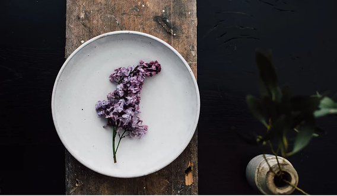

Lilac is a restaurant and wine bar that is listed in
The Michelin Guide.Somewhere you can pop into
for a glass of wine and some nibbles, a long meal of
shared plates or a more traditional menu format.
All with the same overarching ethos as our sister
restaurant Robin Wylde,with a focus on quality,
vegetables,seasonality,locality,reduction of waste
and sustainability.
Cellar 57 - 58 Broad Street,
Lyme Regis, Dorset,
DT7 3QF
info@lilacwine.co.uk